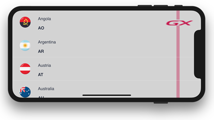

Expand Bounds property
Indicates how much the content can be expanded. Values
DescriptionLet's analyze the behavior in each case running a simple app on an iPhone X, focused on landscape mode where unsafe areas (green color) appear on both sides of the screen (because of the presence of the notch). Suppose we've got a WorkWithDevicesCountry object whose List node is defined as the following image. We'll display the effect of varying Expand Bounds property for the Main Table on the layout.
None valueThe control is not expanded and remains in the safe area of the screen. Background onlyThe background of the control (Main Table) is expanded beyond the unsafe area but not its content (Grid's rows content). Background & contentThe background of the control (Main Table) and its content (Grid's rows content) are expanded beyond the unsafe area. 
Run-time/Design-timeThis property applies only at design-time. ScopeControls: Grid control, Tab control, Canvas control, Table control AvailabilityThis property is available as of GeneXus 15 Upgrade 8 See also
|

| Backlinks | ||
| Expand Bounds Directions property | Expand Bounds Limit property | Toc:Flex Layout Container |
| Layout Behavior properties group |